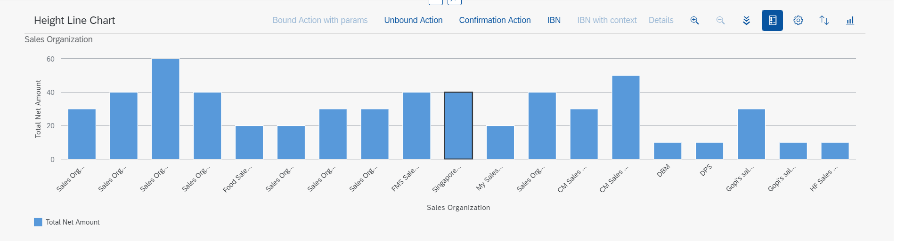

Adding a Chart Facet
You can add a chart facet to a content section within the object page.
A chart facet is suitable to use if you wish to present data graphically for analysis.
Adding the Chart Facet to an Object Page
To add a chart facet, use the UI.Facet term and include the UI.ReferenceFacet complex type, and then reference
the UI.Chart annotation. This is displayed as shown within a content section of the object page in the following
screenshot:

For more information, see Configuring Charts.
The object page does not support the UI.Chart with qualifier (see example below).